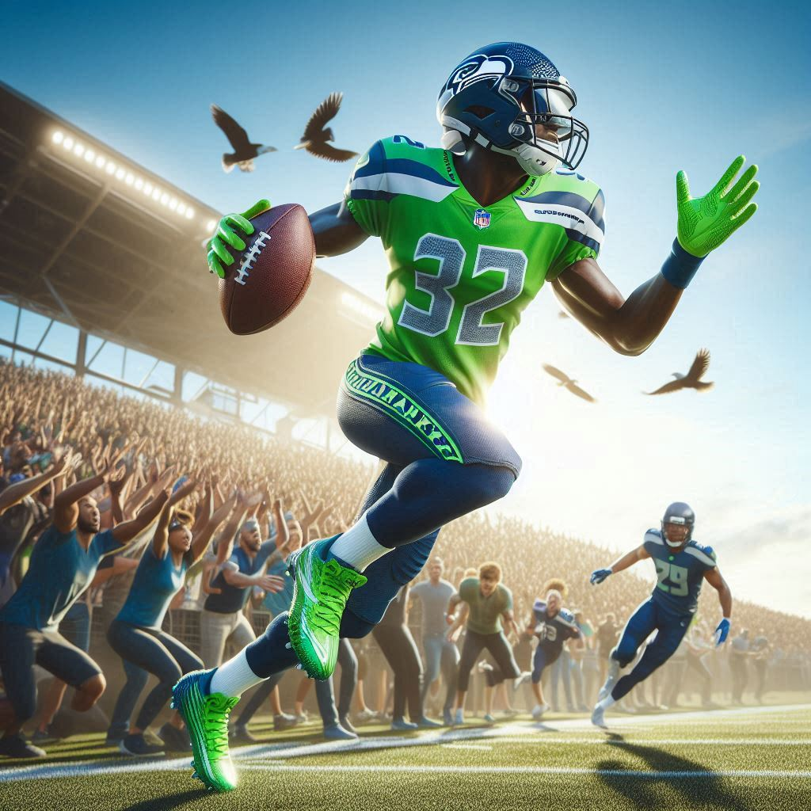
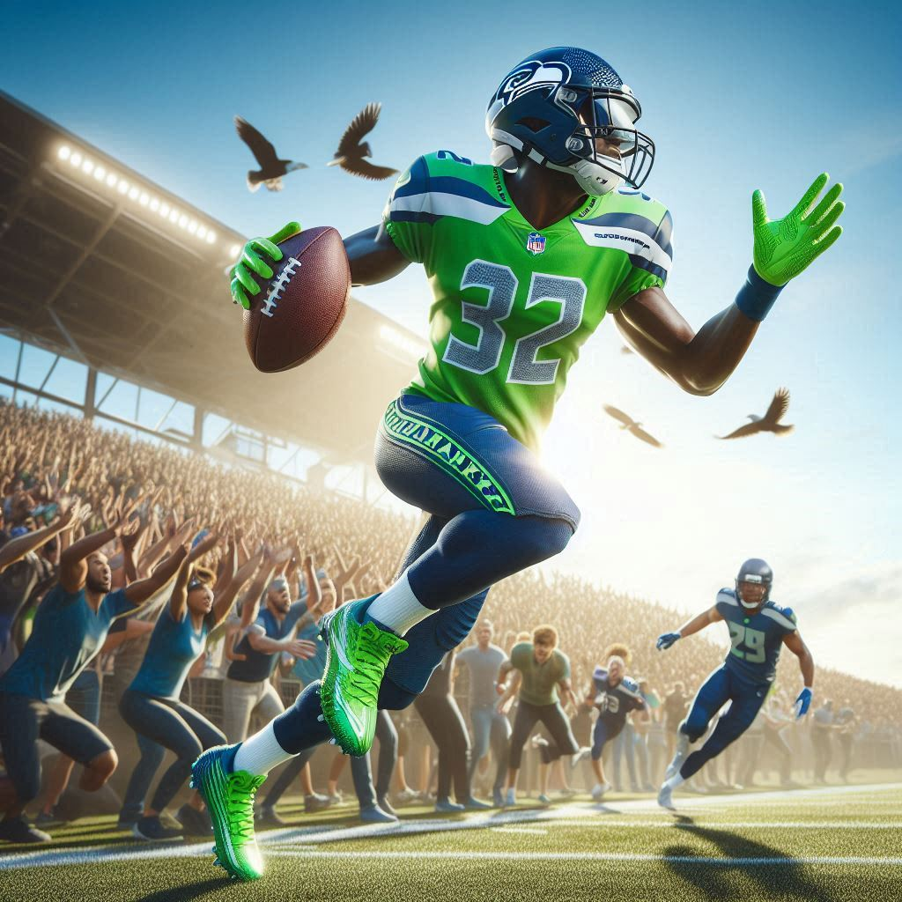

Meet the Team
Discover the Seahawks roster, featuring top veteran stars and promising rookies. Each player profile includes the essential information of position, jersey number, height, weight, and college background so that the fans can identify with their beloved players.
Player Stats and Highlights
Track each player's season performance with up-to-date statistics for tackles, yards gained, touchdowns scored, and more. We also offer video highlights and turning points that showcase each member of the team's talent and hard work.
Player Bios and Stories
Learn about the players' personal history, career milestones, off-the-field activities, and community service. These player bios give fans greater appreciation by shining a light on the humanity of the Seahawks superstars.
 
